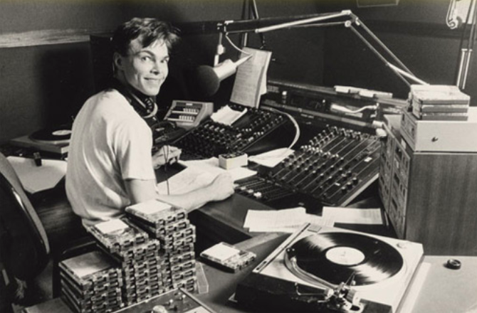

Hello! I made this website to make my project of collecting all essential selection audio recordings wider and more public; from January 4, 1991 to December 23, 2011. This collection is in a constant improvement and anyone can collaborate here. If you've looked through the index tab, you'll see that I have managed to collect quite the number of shows thus far, but I'm still trying to improve quality and length. Fill the forum if you're interested in supporting the project. I don't ask for money, just more information related on how to keep collecting these shows and their respective tracklists.

Random Hotmixes
| Torre del Complejo Cuzco | Biblioteca Nacional de Argentina | Roger Stevens Building | Museo de la Nación |
| Torre del Complejo Cuzco | Biblioteca Nacional de Argentina | Roger Stevens Building | Museo de la Nación |